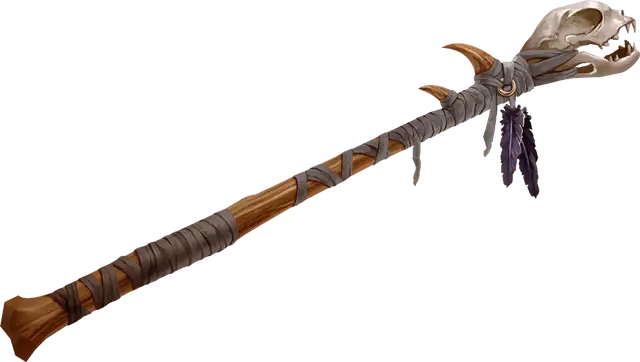

Волшебная палочка страха
Wand of Fear
Волшебная палочка, редкая (требуется настройка)

Рекомендованная стоимость 501-5 000 зм
У этой волшебной палочки 7 зарядов для использования описанными ниже свойствами. Она ежедневно восстанавливает 1к6 + 1 заряд на рассвете. Если вы истратили последний заряд в палочке, бросьте к20. Если выпадет «1», палочка рассыплется в пыль и уничтожится.
Приказ. Если вы держите эту палочку, вы можете действием потратить 1 заряд, чтобы приказать другому существу убежать или упасть, как заклинанием приказ [command] (Сл спасброска 15).
Конус страха. Если вы держите эту палочку, вы можете действием потратить 2 заряда, чтобы кончик палочки испустил 60-футовый конус янтарного света. Все существа в конусе должны преуспеть в спасброске Мудрости Сл 15, иначе они станут испуганными вами на 1 минуту. Будучи испуганным таким образом, существо обязано тратить ходы на то, чтобы переместиться максимально далеко от вас, и оно не может добровольно переместиться в пространство в пределах 30 футов от вас. Оно также не может совершать реакции. Действием существо может использовать только Рывок или пытаться освободиться от эффекта, препятствующего его передвижению. Если двигаться некуда, существо может использовать действие Уклонение. В конце каждого своего хода существо может повторять спасбросок, оканчивая эффект на себе при успехе.